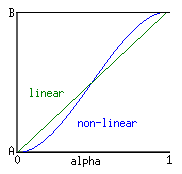

Global Function
The functions listed here are globally available in all classes. Due to UnrealScript's strict object-oriented approach, they're actually methods of the Object class.
Almost all of these functions are declared as native and final (see class syntax) and most of them are also static functions.
See vector, rotator and quaternion for functions on those variable types.
See Global Function (UT) for a list of global functions in UT.
Integer Functions
- int Rand (int Max) [static]
- Returns a random number ranging from 0 to Max-1.
- int Min (int A, int B) [static]
- Returns the lower of the two values.
- int Max (int A, int B) [static]
- Returns the higher of the two values.
- int Clamp (int V, int A, int B) [static]
- If V is smaller than A, A is returned. If V is larger than B, B is returned. In any other case V is returned.
Float Functions
Note that you can use the following functions with integers, but be prepared for precision errors if the integer is greater than 6 digits. For example Abs( -50764630 ) returns 50764632.
- float Abs (float A) [static]
- Returns the absolute value (also known as the modulo) of A, usually written |A|. Eg: Abs(5) == Abs(-5) == 5.
- float Sin (float A) [static]
- Returns sine( A ), where A is in
 Radians.
Radians. - float Asin (float A) [static]
- Inverse sine. Returns sin-1(A).
- float Cos (float A) [static]
- Returns cosine( A ), where A is in Radians.
- float Acos (float A) [static]
- Inverse cosine. Returns cos-1(A).
- float Tan (float A) [static]
- Returns tan( A ), where A is in Radians.
- float Atan (float A, float B) [static]
Returns the inverse tangent of B/A, where A is the adjacent side and B is the opposite side of the triangle. The result is in
Radians.Normally, the inverse tangent function has results between –π/2 and +π/2, giving the same result for B/A and –B/–A. The two-argument form allows the Atan function to return results between –π and +π, i.e. on the full circle, which is generally much more useful. Additionally, the two-argument form supports A = 0, which is impossible in the single-argument form (since that single argument would have to be infinity in that case).
To emulate the inverse tangent with a single argument B, say Atan(B,1).
- float Exp (float A) [static]
- Returns eA
- float Loge (float A) [static]
- Returns ln(A), the natural logarithm.
- float Sqrt (float A) [static]
- Returns the square root of A.
- float Square (float A) [static]
- Returns A2.
- float FRand ( )
- Returns a random number between 0 and 1.
- float FMin (float A, float B) [static]
- Returns the lower of the two values.
- float FMax (float A, float B) [static]
- Returns the higher of the two values.
- float FClamp (float V, float A, float B) [static]
- If V is smaller than A, A is returned. If V is larger than B, B is returned. In any other case V is returned.
- float Lerp (float Alpha, float A, float B) [static]
- "Returns the linear interpolation between A and B."
The return value is calculated through something like this:
(B - A) * Alpha + A - float Smerp (float Alpha, float A, float B) [static]
- Returns an Alpha-smooth nonlinear interpolation between A and B.
The return value seems to be calculated through something like this:
(-2 * (B - A) * Alpha ** 3) + (3 * (B - A) * Alpha ** 2) + A - 
- float RandRange (float Min, float Max) [not native]
- Returns a random number between Min and Max. This function is not static.
- float Ceil (float A) [static]
- Returns A rounded off to the next higher whole number, e.g. Ceil(1.8) returns 2, Ceil(-1.8) returns -1, etc. Ceil will always round up while typecasting float to int rounds up for negative numbers and down for positive numbers, i.e. int casts simply discard everything after the decimal point.
- float Round (float A) [static]
- Returns A rounded off to the nearest whole number, e.g. pass 1.05 and it returns 1.00, 5.5 will return 6.0 etc.
String Functions
- int Len (coerce string S) [static]
- Returns the length of the string, i.e. the number of characters in it.
- int InStr (coerce string haystack, coerce string needle) [static]
- If the string needle is found inside haystack, the number of characters in haystack before the first occurance of needle is returned. That is, if the needle is found right at the beginning of haystack, 0 is returned. If haystack doesn't contain needle, InStr returns -1.
- string Mid (coerce string S, int skip, optional int num) [static]
- Returns a substring of S, skipping skip characters and returning the next num characters or all remaining if the third parameter is left out. Mid("hello", 0, 2) returns "he", Mid("hello", 1) returns "ello", i.e. all but the first character.
- string Left (coerce string S, int num) [static]
- Returns the num leftmost characters of S or all of them if S contains less than num characters.
- string Right (coerce string S, int num) [static]
- Returns the num rightmost characters of S or all of them if S contains less than num characters.
- string Caps (coerce string S) [static]
- Returns S converted to uppercase.
- string Chr (int i) [static]
- Returns the character matchin the given ASCII code.
- int Asc (string S) [static]
- Returns the ASCII code of the first character in S.
- bool Divide (coerce string Src, string Divider, out string LeftPart, out string RigthPart) [static]
- Divides a string and returns the two parts.
- int Split (coerce string Src, string Divider, out array<string> Parts) [static]
- Splits a string at the specified divider and returns the parts as a dynamic array of strings. If the input string starts with the given divider, the first element of the output array will be empty. Note: In early patch version of UT2003 this function was buggy. See El Muerte TDS/wUtils for a fix.
UT2004 Specific
- string Locs (coerce string S) [static]
- Returns S converted to lowercase.
- string Repl (coerce string Src, coerce string Match, coerce string With, optional bool bCaseSensitive) [static]
- Replaces all occurances of Match in string Src. Specify true for bCaseSensitive if matching should be case-sensitive.
- string Eval ( bool Condition, coerce string ResultIfTrue, coerce string ResultIfFalse ) [static]
- Given boolean expression Condition, return string ResultIfTrue if the expression evaluates to true, otherwise return ResultIfFalse.
- int StrCmp (coerce string S, coerce string T, optional int Count, optional bool bCaseSensitive) [static]
- ReplaceText (out string Text, string Replace, string With) [static, not native]
- Like Repl, but modifies the input string variable directly and is always case-sensitive.
- EatStr(out string Dest, out string Source, int Num) [static, not native]
- Removes Num characters from the source string and adds them at the end of the destination string.
- string GetItemName (string FullName) [not native]
- Returns 'ItemName' from 'Package.Group.ItemName'.
General Functions
InterpCurve Functions
- float InterpCurveEval (InterpCurve curve, float input)
- Interpolates the points in curve to determine which value the curve would have, had we the point at input.
- InterpCurveGetOutputRange (InterpCurve curve, out float min, out float max) [static]
- Probably returns the minimum and maximum value of the curve defined by the points in curve.
- InterpCurveGetInputDomain (InterpCurve curve, out float min, out float max) [static]
- Probably returns the minimum and maximum argument values for the curve defined by the points in curve.
Logging
- Log (coerce string S, optional name Tag) [static]
- Writes a line to the log file. The line begins with the Tag or "ScriptLog:" if Tag was not specified, followed by the log string.
The tags 'Error' and 'Warning' (and probably others, too) have a special meaning in Commandlets. - Warn (coerce string S) [static]
- Same like Log, but the line starts with "ScriptWarning:" and contains information about the object, state and function that called Warn.
- string Localize (string SectionName, string KeyName, string PackageName) [static]
- Returns the string found in PackageName.int in the [SectionName] section. Logs an error if no localization for the specified string is found.
State-Related
- GotoState (optional name NewState, optional name Label)
- Switches to a new state. State code execution begins at the specified label or at "Begin:" if Label is not specified.
Before the state is changed the old state's EndState function is called. After the state changed BeginState of the new state is called. - bool IsInState (name TestState)
- Returns whether the object's current state is the one specified.
- name GetStateName ( )
- Returns the object's current state name.
- BeginState ( ) [not native, not final]
- This event is executed during GotoState right after the object switched to the new state. This function can be overridden in any state of any class.
- EndState ( ) [not native, not final]
- This event is executed during GotoState right before the object switches to the new state. This function can be overridden in any state of any class.
Class Hierarchy
- bool ClassIsChildOf (class TestClass, class ParentClass) [static]
- Returns whether TestClass is a subclass of Parentclass. If the two classes are the same it returns true.
- bool IsA (name ClassName)
- Returns whether the object's class is the specified class or a subclass. This function doesn't need a reference to the desired class, but just the class's name.
Enabling / Disabling Functions
- Enable (name ProbeFunc)
- Enables a probe function.
- Disable (name ProbeFunc)
- Disables a probe function.
Objects / Properties
- string GetPropertyText (string PropName)
- Returns the value of the specified property typecasted to string. It is not possible to access default properties in this manner. This is useful when you don't want any dependencies to the package of an object, but still need to access its public (i.e. neither private nor protected) properties.
Usage: aString = anObject.GetPropertyText("PropertyName"); - SetPropertyText (string PropName, string PropValue)
- Assigns a value to the specified public non-constant property of an object. Only use this for properties that can be typecasted from string.
Usage: anObject.SetPropertyString("PropertyName", "new value"); - name GetEnum (Object E, coerce int i) [static]
- Returns the i-th element of the given enumeration, as in
GetEnum(enum'MyEnum', 2)or an empty name of the specified index exceeds the number of elements in the enumeration. The second parameter is only declared 'coerce' in UT2004. - Object DynamicLoadObject (string ObjectName, Class ObjectClass, optional bool MayFail) [static]
- Returns a reference to a specified object, loading it if necessary. See DynamicLoadObject.
- Object FindObject (string ObjectName, class ObjectClass) [static]
- SaveConfig ( )
- Saves the current values of config and globalconfig variables of this object to the ini file and sets them as default values for the object's class.
- StaticSaveConfig ( ) [static]
- Saves the default values of config and globalconfig variables of this object's class to the ini file.
- ResetConfig ( ) [static]
- Resets the config and globalconfig variables of this object's class to the values stored in Default.ini or DefUser.ini.
UT2004 Specific
- ClearConfig (optional string PropertyName)
- Remove this object's section from the appropriate .ini file, and reload the script defaults for this object. If PropertyName is specified, only remove and reload that property, if found.
- StaticClearConfig (optional string PropertyName) [static]
- Static version of ClearConfig().
- ResetConfig (optional string PropertyName) [static]
- If object's class does not have a section in the default.ini or defuser.ini, ResetConfig() now performs ClearConfig(). Otherwise, functionality is same as before. If PropertyName is specified, only reset and reload that property, if found.
- array<string> GetPerObjectNames (string ININame) [static]
- Returns all section names that exist in the .ini file specified by ININame which correspond to PerObjectConfig classes.
- GetReferencers (Object Target, out array<Object> Referencers)
- Returns a list of objects referencing the specified target object. Useful for debugging garbage collection problems.
Other Functions
- StopWatch (optional bool bStop) [static]
- For script timing. Have done some testing, having StopWatch called on Tick() with different values for bStop. bStop=False seems to do nothing, not showing any HUD messages, output to stdout/err, or to logfile. First call with bStop=True prints text "UNICODE str: Time=%lf ms" to output, logs "Log: Unknown percent in UnUnix.cpp::wvsnprintf().", and crashes, whether there have been zero, one, or many previous calls with bStop=False. So far, none of this looks useful, but perhaps it needs to be used in a different context to work properly - on dedicated server, or in an Actor (my test was in an Interaction, in an "Instant Action" game).
StopWatch( false ); starts the stopwatch. StopWatch( true ); disables and resets the timer. When you stop the timer, a line will be printed in the log stating something like: Time=41.768ms. This is the time that the stopwatch was at when it was stopped. This makes it appear to be very much like clock.. but the log statement that shows the stop time is not what you can really do with StopWatch.
The magic of stopwatch is that when it is running it timestamps log entries. Each is stamped with the time elapsed since the timer was started. It is great for finding out the time taken throughout a function, without writing a veritable pile of clock and unclock statements, as well as adding temporary variables for them, and the works! See Code Optimization for more. - StopWatch is apparently an Epic addition, as it does not seem to exist in Runtime or in other UT2003 era games. - bool IsOnConsole ( )
- For console specific stuff; the only reference to IsOnConsole() to be found is in 2136 of UT2K3 in a fragment found in PlayerController.uc. "Console" in this case refers to a game console, specifically the X-Box. Not the console dropped down and typed into.
- bool IsSoaking ( )
- For console specific stuff; the only references to IsSoaking() are to be found in 2136 of UT2K3 in Console.Initialized() and Console.KeyEvent().
UT2004-specific
- bool PlatformIsMacOS()
- bool PlatformIsUnix()
- bool PlatformIsWindows()
- bool PlatformIs64Bit()
- These report basic truths about the target OS. You should only use them for basic things (MacOS? Don't report Direct3D support, etc). MacOSX is a Unix of sorts, but does not report PlatformIsUnix()==true. PlatformIsWindows() is for Win32 and Win64. PlatformIs64Bit() may be true in conjunction with any other platform function if the binary is 64-bit native (not 32-bit on a 64-bit platform).